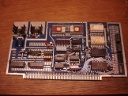
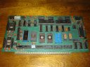

Hacking the S-100 Bus
|  |
A 1702A ROM and 2101 RAM Board Using the IO-2
Building up a Solid State Music IO-2 board as a 1702A PROM reader and 2101 static RAM board using period components. Useful for reading 1702As and testing 2101 SRAMs for use in other projects. |
|  |
The Dajen SCI -- A System Central Interface for the S-100 Bus
The Dajen SCI is a relatively unknown S-100 board with a ton of highly useful features! Documentation and information on repairing, using and modifying the SCI. |